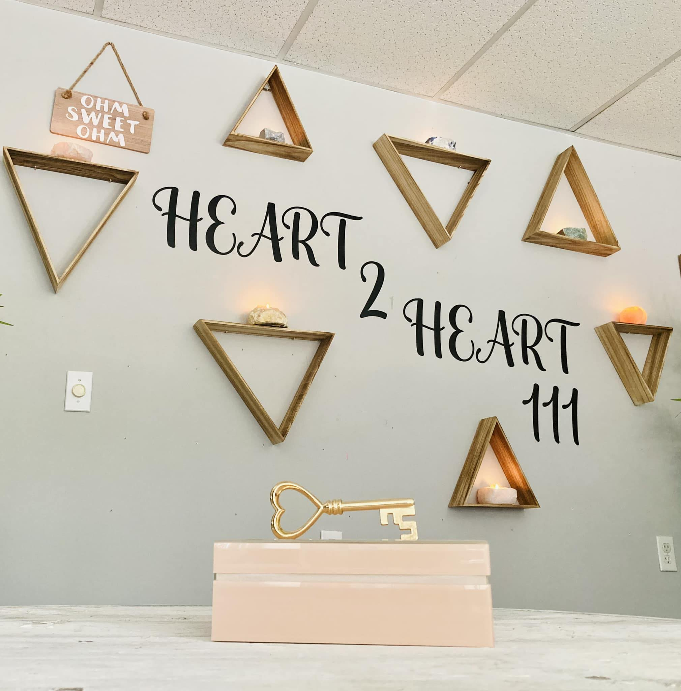
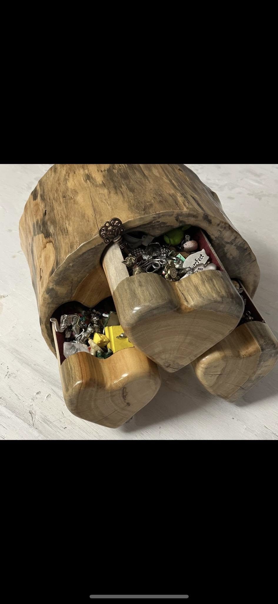
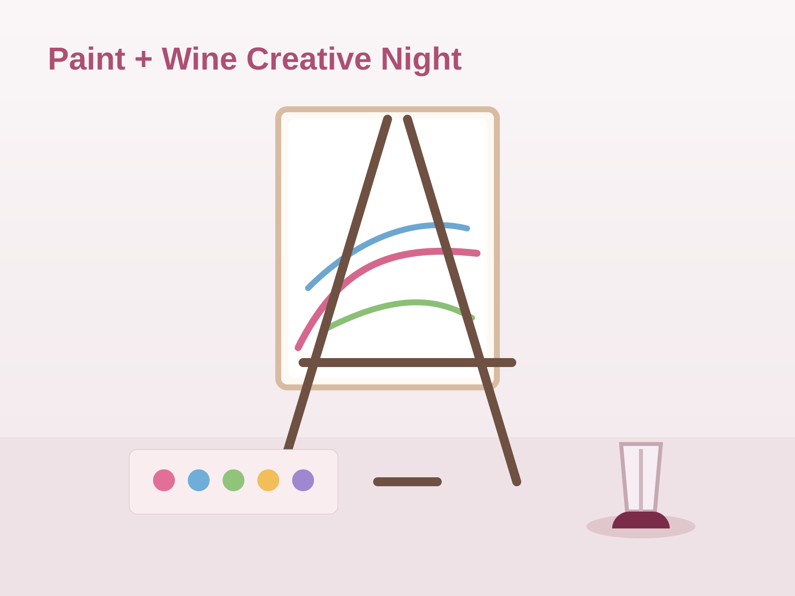
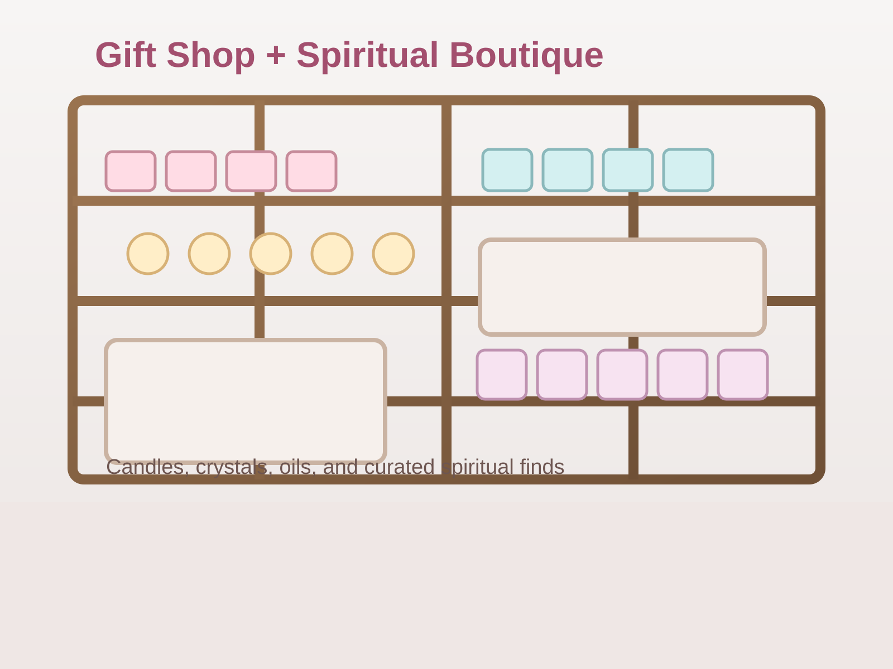

Choose a focus
Love, work, self-care, family, spirit—or leave the field open.
Private reading room
Heart to Heart 111
You are at the threshold of a quiet space meant for invited guests. What happens here is gentle and unhurried—this door stays closed so the room stays yours.
Need access? Contact Heart to Heart 111—we will help you find your way in.
Private reading room
Whisper your question, choose a charm, watch the cards turn—then open the whole story when you are ready.
Heart to Heart 111 · Coopersburg, Pennsylvania
The path
One unhurried flow—you set the pace.
Love, work, self-care, family, spirit—or leave the field open.
One symbol tilts the tone; let instinct lead.
Flip them yourself and watch the pattern gather.
Preview first, then the complete written reading—when it feels right.
Step 1
Choose a focus, then add words if you wish—they give the cards a thread to follow.
A category alone is enough; words pull the thread tighter.
What you share stays with this reading—yours alone.
Step 2
Lift the lid; let one symbol step forward.
Tap to open
Choose your charm
Step 3
More cards, more nuance—only the depth you want.
When it feels right, call the cards forward.
Shuffling the deck…
Turn each card in your own time—the spread opens at its pace.
Almost there
The spread is open. Beyond this is the full voice of the cards—patient, complete.
The whole story—for this spread alone—is a single $5 offering. No subscription. No account here.
Pay through PayPal · guest checkout welcome · no account here
After paying, return to this page—the reading opens here. Your receipt holds the ID to restore.
What do I receive? The full written reading for this draw: each card in place, how they work as one piece, and parting guidance.
After PayPal? Close their window and come back here. If nothing moves, wait a beat or refresh once—this session keeps your spread.
Again later? Yes. Restore with the transaction ID on your PayPal receipt—that matches you to what you bought.
Professional advice? No—for reflection and spiritual exploration only, not medical, legal, or financial decisions. Our disclaimer has the full language.
Paid already? Tap below and keep your PayPal transaction ID handy.
Written interpretation for the tarot spread you turned above.
In person, on Main Street
The studio
The online reading is complete on its own. When you want walls, shelves, and voice in the same room, Heart to Heart 111 is on Main Street.

Art, ritual, and a real studio presence.Unhurried visits—personal, never rushed.

Private sessions: tarot, psychic and medium readings, pendulum, and one-to-one spiritual work.

Rest, alignment, and gentle spiritual support—some sessions available virtually.

Crystals, art, handmade gifts—pieces that warm a room.
Studio reviews
Kind, down to earth, beautiful—worth returning to.
Public reviews of the shop, not the online reading. Read reviews →
Down to earth and welcoming.
A beautiful little shop.
Kind and respectful.
Patient and encouraging.